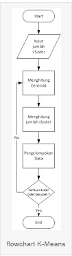
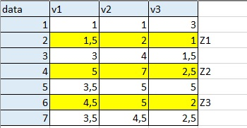
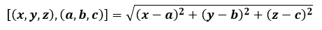
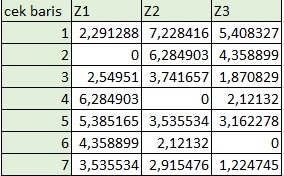
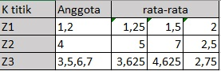
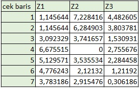
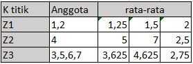
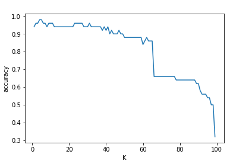

KNN
Metode K-Means¶
K-Means adalah salah satu algoritma clustering / pengelompokan data yang bersifat Unsupervised Learning, yang berarti masukan dari algoritma ini menerima data tanpa label kelas. Fungsi dari algoritma ini adalah mengelompokkan data kedalam beberapa cluster. Karakteristik dari algoritma ini adalah :
-
Memiliki n buah data
-
Input berupa jumlah data dan jumlah cluster (kelompok)
-
Pada setiap cluster / kelompok memiliki sebuah centroid yang mempresentasikan cluster tersebut.
Algoritma K-Means
Secara sederhana algoritma K-Means dimulai dari tahap berikut :
-
Pilih K buah titik centroid.
-
Menghitung jarak data dengan centroid.
-
Update nilai titik centroid.
-
Ulangi langkah 2 dan 3 sampai nilai dari titik centroid tidak lagi berubah.
Kita coba gambarkan dalam sebuah flowchart, agar kita lebih mudah memahami algoritma K-Means. Berikut adalah gambaran flowchartnya :

Contoh
Untuk meningkatkan pemahaman kita, mari kita bahas contoh soal berikut lengkap dengan perhitungannya. Dimisalkan kita memiliki sampel data dalam tabel berikut. Ada 7 data dan masing masing data mempunyai 3 colom. selanjutnya pilih data 2,4,6 sebagai titik Centroid (K)

selanjutnya kita akan menghitung jarak tiap data terhadap titik Centroid dengan rumus

sehingga menghasilkan

lalu kita mencari anggota data centroid (Z1.Z2.Z3) dari kolom/centroid paling mendekati/paling kecil nilainya lalu kita cari rata rata dari centroid pada setiap colom

hitung lagi menggunakan rumus diatas dengan titik centroid rata rata diatas

cari anggota dan rata ratanya lagi

jika anggota tidak berubah maka itulah hasilnya
sumber: https://www.ketutrare.com/2018/11/algoritma-k-means-clustering-dan-contoh.html
Metode K-Nearest Neighbors (KNN)¶
K-Nearest Neighbors (KNN)
Algoritma KNN merupakan metode yang menggunakan algoritma supervised. Algoritma supervised learningbertujuan untuk mendapatkan pola baru sedangkan unsupervised learning tujuannya untuk mendapatkan pola dalam sebuah data. Ide KNN didasarkan pada asumsi lokalitas di ruang data [10]. Prinsip kerja KNN adalah mencari jarak terdekat antara data yang akan dievaluasi dengan K tetangga (neighbor) terdekatnya dalam data pelatihan. Data training diproyeksikan ke ruang berdimensi banyak, yang mana masing-masing dimensi menjelaskan fitur dari data. Ruang ini dibagi menjadi bagian-bagian berdasarkan klasifikasi data training. Sebuah titik pada ruang ini ditandai kelas c, jika kelas c merupakan klasifikasi yang paling banyak ditemui pada K buah tetangga terdekat titik tersebut . Dalam algoritma ini, nilai K yang terbaik itu tergantung pada jumlah data. Ukuran nilai K yang besar belum tentu menjadi nilai K yang terbaik begitupun juga sebaliknya. Langkah-langkah untuk menghitung algoritma KNN:
a. Menentukan nilai K
b. Menghitung jarak euclidian (query instance) dengan (1) pada masing-masing objek terhadap training data yang diberikan.
c. Kemudian mengurutkan objek-objek tersebut ke dalam kelompok yang mempunyai jarak euclidian terkecil.
d. Mengumpulkan label class Y (klasifikasi Nearest Neighborhood).
e. Dengan menggunakan kategori, Nearest Neighborhood yang paling mayoritas maka dapat diprediksikan nilai query instance yang telah dihitung
Contoh
Impor data yang diperlukan dan periksa fitur-fitur yang ada pada data tersebut.
impor fungsi datasets dari modul dataset dataset scikit-learen dan dibuat objek bunch iris
(bunch adalah tipe objek khusus scikitlearn untuk menyimpan kumpulan data dan atributnya)
from sklearn import datasets
import pandas as pd
from sklearn.linear_model import logistic_regression_path
from sklearn.linear_model import logistic_regression_path
iris=datasets.load_iris()
print(iris.data)
print(iris.target)
Menampilkan iris.data dan menampilkan iris.target. dan data yang ada pada diatas adalah digunakan untuk memberikan input kepada program dibawah
from sklearn.model_selection import train_test_split
x_train, x_test, y_train, y_test=train_test_split(iris.data,iris.target,test_size=0.33)
accuracy_values=[]
for x in range(1,x_train.shape[0]):
clf=KNeighborsClassifier(n_neighbors=x).fit(x_train,y_train)
accuracy=accuracy_score(y_test,clf.predict(x_test))
accuracy_values.append([x,accuracy])
pass
import numpy as np
accuracy_values=np.array(accuracy_values)
plt.plot(accuracy_values[:,0],accuracy_values[:,1])
plt.xlabel("K")
plt.ylabel("accuracy")
plt.show()
Pada tabel grafik diatas menghasilkan grafik yang diawali dengan nilai 1.0 dan berakhir pada nilia 100. pada grafik diatas kita smeua dapat melihat bahwasannya grafik lambat laun semakin menurun dari setiap tingkatannya.
